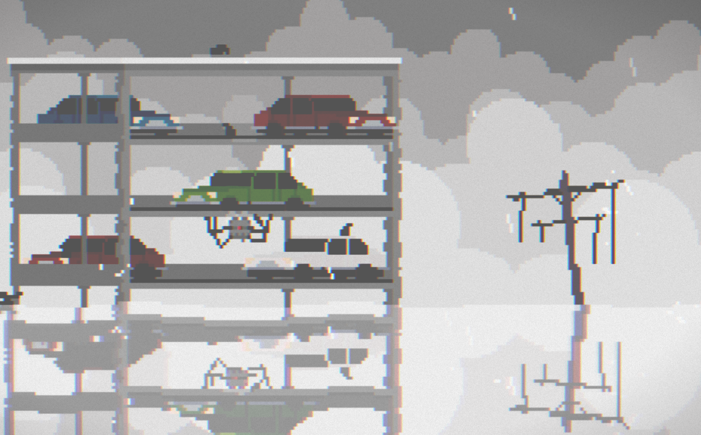
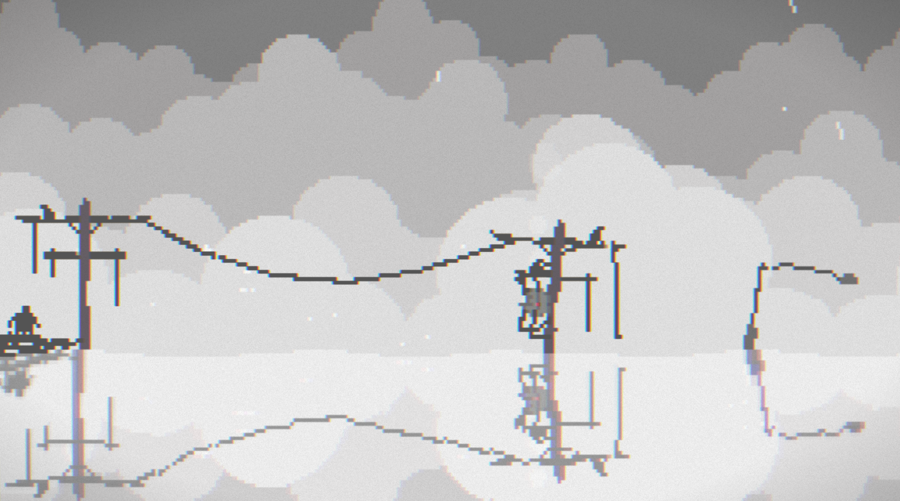
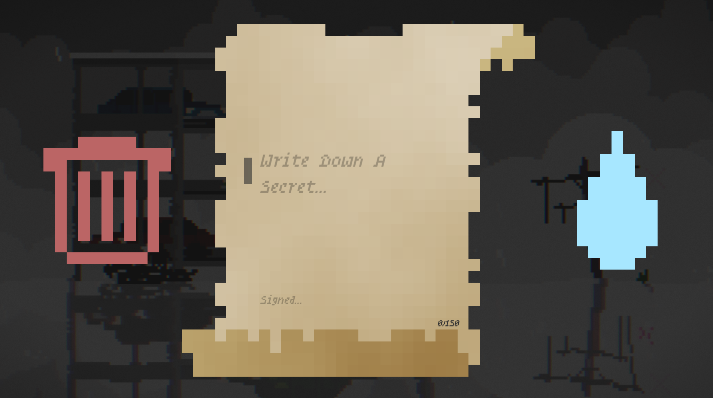

Game Review Assignment
This page begins organizing screen captures and notes for my game review. The game creates a flooded-world atmosphere through rain audio, pixel-art visuals, and repeated screen transitions as the player moves between areas.
Game Atmosphere and Design
The audio is made up of rain noises, which helps simulate being in a world that is actively flooding. The graphics use different forms of pixel art. Movement across the world happens when the character reaches the end of the screen, causing the game to cut to a new screen with a different background.
I did not play long enough to find a clear ending. From what I saw, the game seemed to loop through backgrounds rather than guiding the player toward a definite conclusion.
Player Character and Interactions
There is only one controllable character. I did not see any NPCs during my playthrough, but there are interactions with objects in the world. For example, the player can interact with a boat and write letters that are tossed out as bottles before vanishing.
The only way I found to take damage was by drowning, which fits the flooding theme and reinforces the danger of the game world.
Challenge and Objectives
I am still unsure of the full purpose of the game, so the main challenge seems to be figuring out what the objectives are. The game does not clearly explain what the player is supposed to accomplish, which makes exploration feel uncertain.
Screen Capture Collection
The screenshots below are taken from the game "The things we lost in the flood"



Meta Elements
The game comments on itself by giving directions on how to control the character. I did not see any other obvious meta comments or moments where the game directly acknowledged itself as a constructed game system.
Future Development Suggestions
For future development, character movement should be improved, and the game should include clearer objectives and goals. This would help players understand what they are working toward while still allowing the flooded-world atmosphere to feel mysterious.